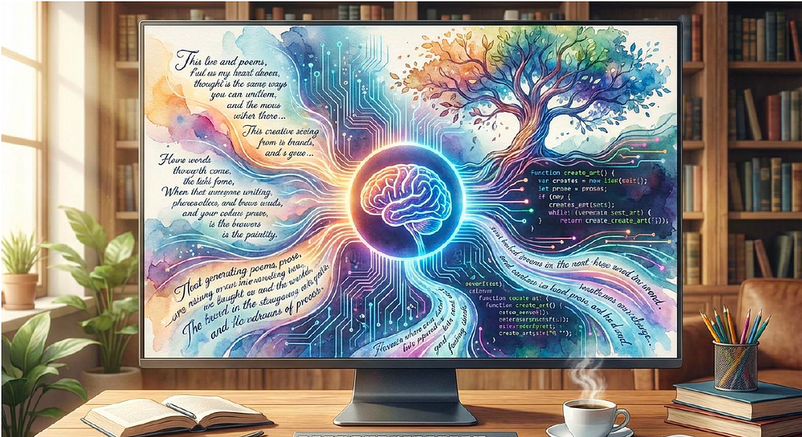
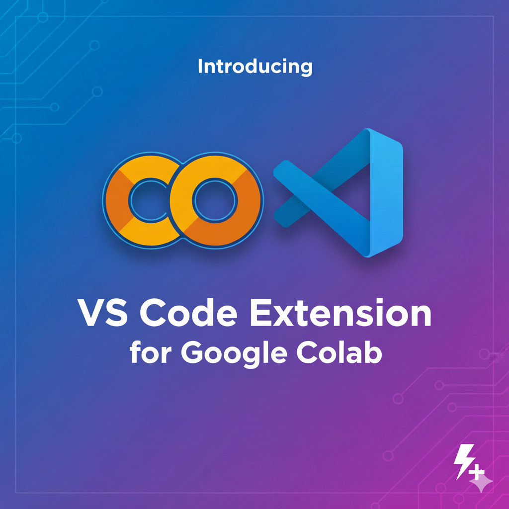

Blog
Here are some of my recent articles on Medium. You can find more on my Medium profile.
-
 Building a Cardiology Assistant: Synthetic Data and JAX-Based Fine-Tuning
Building a Cardiology Assistant: Synthetic Data and JAX-Based Fine-TuningExplores specialized medical AI applications using synthetic data and JAX-based fine-tuning to create a high-performance cardiology assistant.
Apr 20, 2026
-
 Beyond Classification Labels: Fine-Tuning Gemma 3 1B-IT with Financial Reasoning
Beyond Classification Labels: Fine-Tuning Gemma 3 1B-IT with Financial ReasoningA two-part series on transforming Gemma 3 1B-IT into a specialized financial analyst by training it to provide explicit chain-of-thought reasoning for its predictions.
Mar 20, 2026
-
 Hands-on Benchmarks with Google's Gemma 3 (and why Small Language Models are winning)
Hands-on Benchmarks with Google's Gemma 3 (and why Small Language Models are winning)In-depth performance analysis of the Gemma 3 family, demonstrating how small models can outperform larger ones through efficient architecture and specialized training.
Mar 18, 2026
-
Gemma from Scratch: Mastering LLM Implementation with JAX and Flax
Guide on porting Gemma to JAX/Flax, implementing core components like RoPE and GQA to leverage XLA's performance on TPUs and GPUs.
Dec 20, 2025
-

Your AI from Scratch: Building a Customised LLMFoundational tutorial implementing a Transformer model from zero using PyTorch, demystifying attention, normalization, and embeddings for deep architectural understanding.
Dec 20, 2025
-

Google Colab & VS Code ExtensionWorkflow guide for connecting local VS Code to Colab's cloud GPUs/TPUs, enhancing productivity with IDE features while using remote hardware.
Nov 13, 2025
-
Fine-tune Gemma-3–270M for Financial Sentiment Analysis
Demonstrates high-performance financial sentiment analysis using the ultra-lightweight Gemma-3 270M model, highlighting efficiency for resource-constrained on-device AI applications.
Sep 11, 2025
-
Fine-Tuning Gemma 3 1B for Function Calling: A Step-by-Step Guide
Tutorial on enabling agentic capabilities in Gemma 3 1B via LoRA fine-tuning for structured tool-use and reliable function calling.
Jun 25, 2025
-
Building agents with Gemini 2.5 Pro for the HF Agents Course
Evaluates Gemini 2.5 Pro on the GAIA benchmark, exploring advanced reasoning and long-context windows for complex, multi-step agentic tasks.
Jun 18, 2025
-
Learning from Kaggle Competitions using Gemini 2.5: AI Mathematical Olympiad — Progress Prize 2
Strategic overview of solving National Olympiad-level math problems using Gemini 2.5, focusing on majority voting and prefix caching techniques.
May 18, 2025
-
Fine-Tuning Gemma 3 1B-IT for Financial Sentiment Analysis: A Step-by-Step Guide
Step-by-step guide for specialized financial sentiment analysis using PEFT/LoRA on the Gemma 3 1B-IT model for domain-specific accuracy.
Mar 25, 2024
-
Training for Reasoning with GRPO — part II (a step by step explanation)
Technical deep-dive into implementing Group Relative Policy Optimization (GRPO) with Gemma 2 2B-IT to teach models explicit reasoning traces.
Mar 7, 2024
-
A Personal Assistant for knowledge management based on Gemini on Gemini 2.0 and Vertex AI
Building a custom AI assistant using Gemini 2.0 Flash to organize and summarize personal notes and URLs into structured knowledge.
Feb 26, 2024
-
Training for Reasoning with GRPO — part I ( project overview & results)
Research overview of applying GRPO reinforcement learning to Gemma 2 2B-IT, enabling emergent reasoning capabilities in small language models.
Feb 21, 2024
-
Gemma 2 2B learns how to tutor in AI/ML
Shows how to create a specialized AI tutor by fine-tuning Gemma 2 2B on synthetic data generated from technical documentation.
Sep 25, 2023
-
 Data Science AI Assistant with Gemma 2b-it: a RAG 101
Data Science AI Assistant with Gemma 2b-it: a RAG 101Bare-metal implementation of Retrieval-Augmented Generation (RAG) using ScaNN and GTE-large to ground Gemma 2B-IT in factual knowledge.
May 9, 2023
-
Sherlock Holmes Q&A Enhanced with Gemma 2b-it Fine-Tuning
Demonstrates baking niche domain knowledge into Gemma 2B-IT's weights through fine-tuning, serving as an alternative to RAG for specific topics.
Apr 2, 2023
-
ML Olympiads: detect hallucinations in LLMs with Google Gemini
Uses Google Gemini as an automated evaluator to detect factual inconsistencies and hallucinations in other LLMs for improved reliability.
Mar 20, 2023
-
Higher performance with Gemma
Introductory overview of Google's Gemma models, showcasing their benchmark-surpassing performance and suitability for on-device AI and local development.
Feb 29, 2023
-
Fine-tuning a large language model on Kaggle Notebooks for solving real-world tasks — part 5: saving your work for reusing
Concluding guide on merging LoRA weights, managing GPU memory, and saving models for production deployment after fine-tuning on Kaggle.
Feb 15, 2023
-
Fine-tuning a large language model on Kaggle Notebooks for solving real-world tasks — part 4 (LLama 2 strikes back)
Advanced optimization techniques for conversational fine-tuning, focusing on chat formats and strategic layer selection for better parameter efficiency.
Dec 15, 2022
-
Fine-tuning a large language model on Kaggle Notebooks for solving real-world tasks — part 3
Adapts the fine-tuning workflow to Mistral 7B and Phi-2, demonstrating high performance on financial tasks with smaller, efficient models.
Nov 15, 2022
-
Fine-tuning a large language model on Kaggle Notebooks for solving real-world tasks — part 2
Practical tutorial on the end-to-end pipeline for financial sentiment analysis using Llama 2 7B on Kaggle's free GPU resources.
Oct 15, 2022
-
Finetuning a large language model on Kaggle Notebooks for solving real-world tasks — part 1
Theoretical foundation for LLM fine-tuning, explaining QLoRA and PEFT as solutions for adapting large models with limited hardware.
Sep 15, 2022